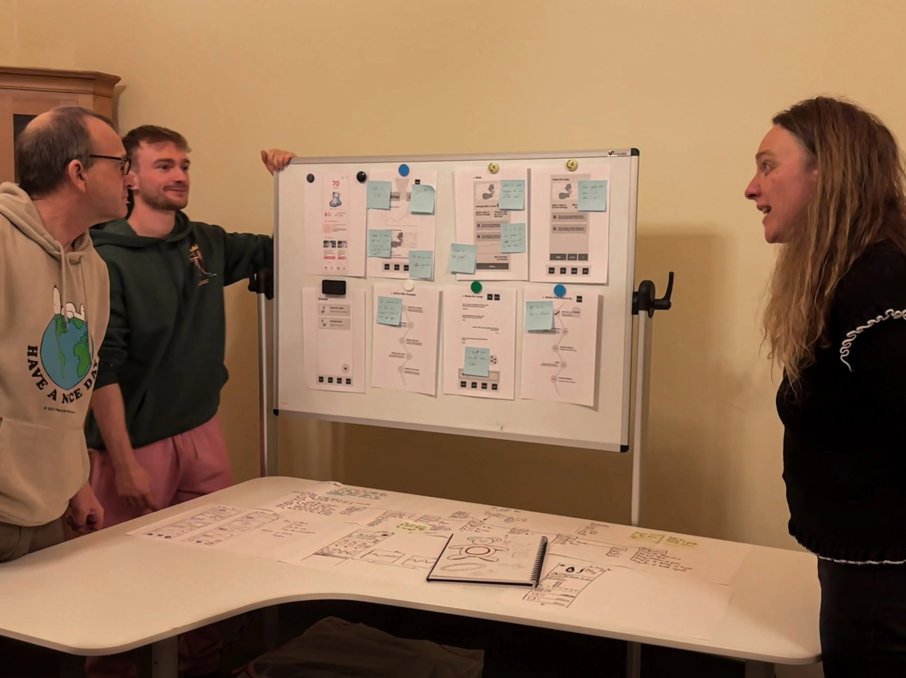
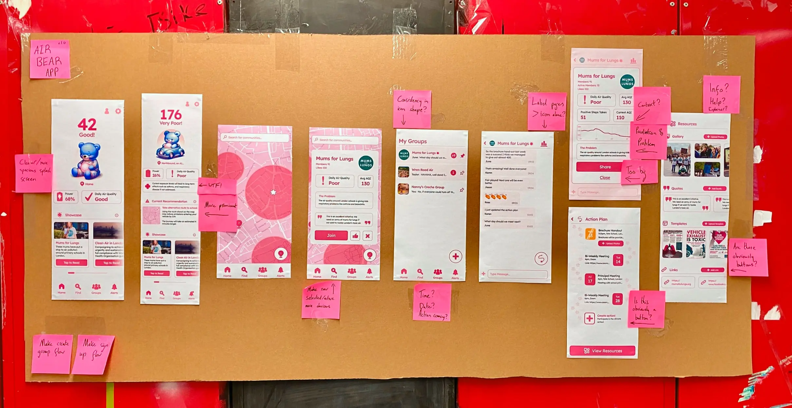
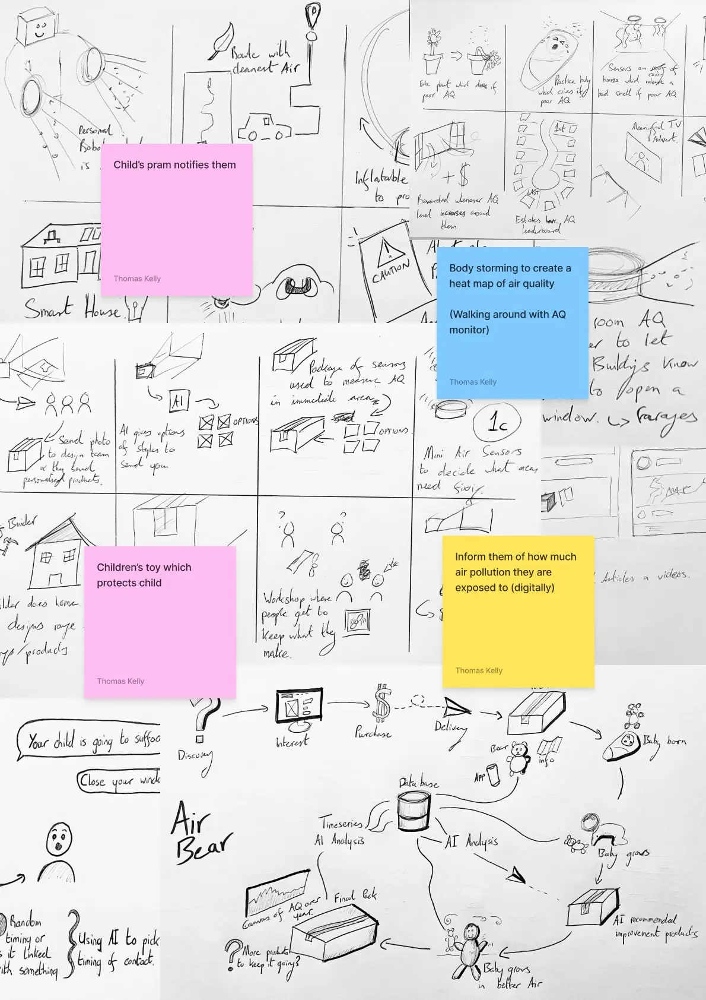
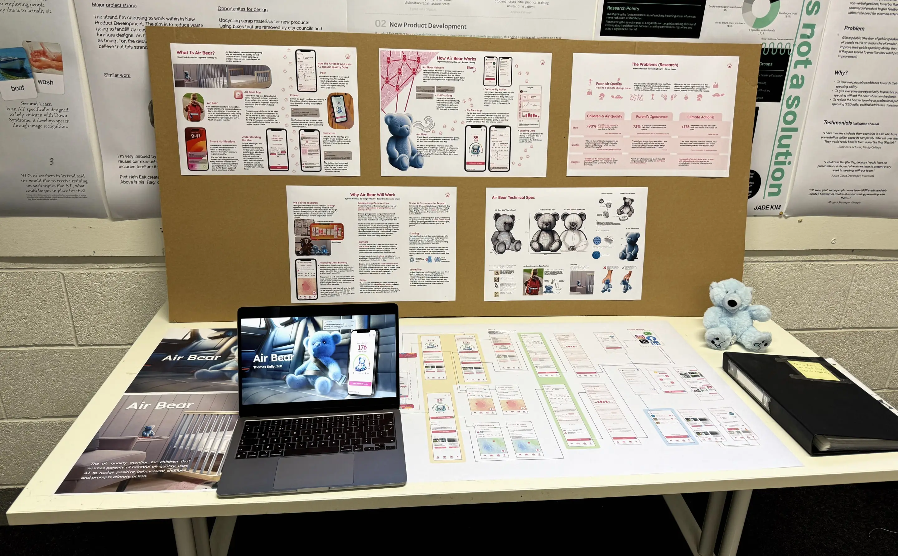
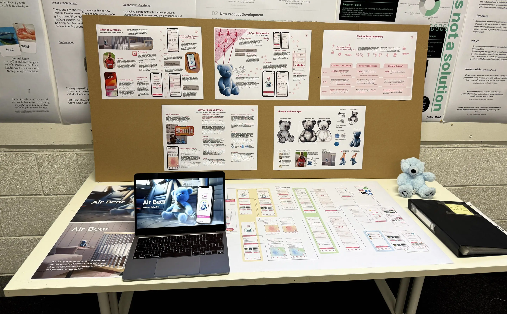
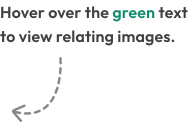
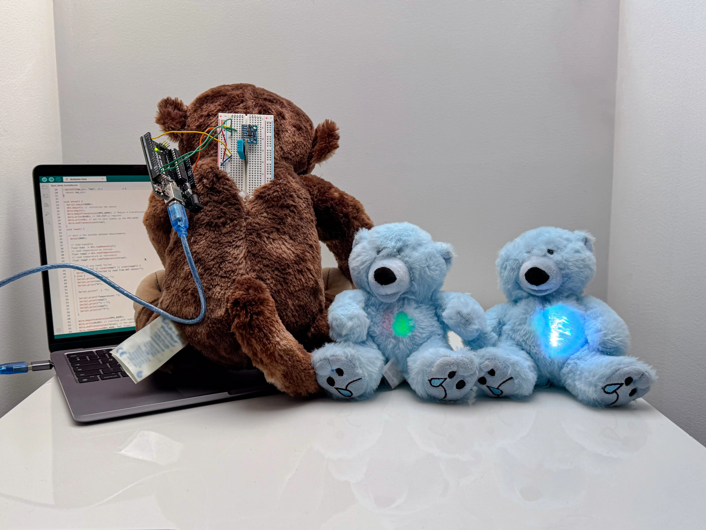

Air Bear
Description
Air Bear is a smart air quality monitor for children that notifies parents of harmful air quality, uses AI to nudge positive behavioural changes and prompts climate action. It was designed under the brief "Apply AI" for the 2023/24 RSA Design Awards.
Duration: Oct 2023 - Dec 2023
Role: Solo Designer
Problem
Children are highly vulnerable to poor air quality related heath issues. Parents often overlook air quality's impact on children's health, risking future problems such as asthma, hay fever and cancer.
Proposal
Air Bear uses a network of bears collecting air particle data to create a comprehension of air
quality around children in a localised area. The app prompts community engagements and
participation through the use of community groups
The Air Bear App notifies parents of predicted harmful air scenarios, recommending tailored
behavioural changes to protect their child.
Research
From interviews with parents and guardians who have participated in climate activism to improve air
quality issues in their area, I gained insight into the need for accessible predictive, current, and
past air quality data to inform parent’s decisions around children’s exposure to air pollutants.
Through co-design and feedback sessions, the necessity to nudge parents and others to participate in
a collective effort to improve air quality in any manner was apparent.
Concepting
During the concept phase, ideas were generated through ideation sessions with parents using ‘How Might We’ statements. Sticky-note brainstorming and Crazy Eights sessions were conducted in support of the idea generation.
Desk Research Interviews 
'How Might We' Brain-Storming
Co-Design Sessions Feedback Sessions
SWOT Analysis Crazy-Eights Lo-Fi
Hi-Fi Cultural Probes Body-Storming
User Flows  Usability Studies
Presentations 
Usability Studies
Presentations 

Prototyping
3 physical teddy bear prototypes were created for testing to evaluate the functionality of the electronics (air quality sensors), and to establish how children would react and interact with the teddy bears as Air Bear’s intent was to fit into children’s daily routine seamlessly.
Evaluation
Observations from cultural probes established that children had no issue with the teddy bears being
part of their routines, validating the idea.
Parent’s expressed the opinion that it would not grab their child’s attention and would possibly not
be played with. This was a non-issue as there would be less interference with the internal
electronics and therefore less outlying air quality data.
The Air Bear app was observably usable, and parents had no issue understanding the navigation through
the app.
Feedback on a visual redesign was received. Given testing was conducted with a first-iteration
high-fidelity prototype, this was foreseeable.